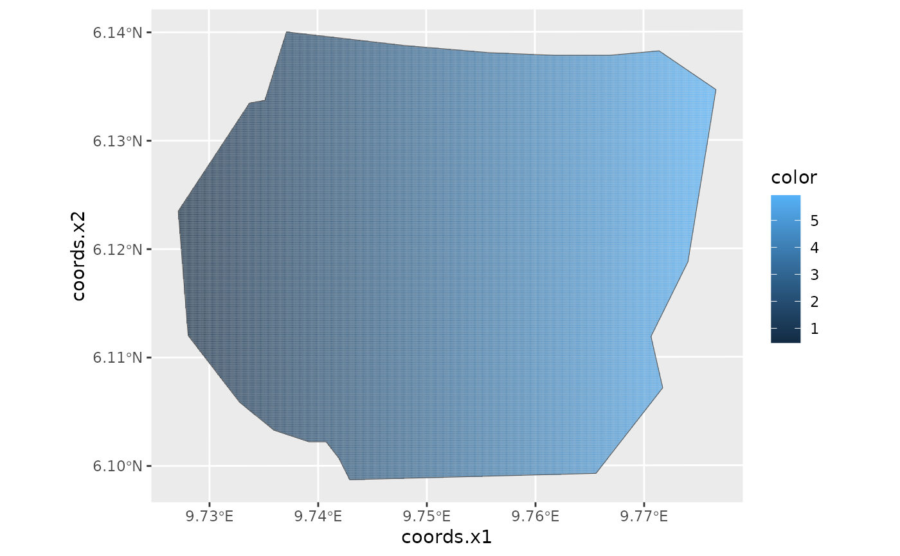

This function extracts the graph of an inla.mesh object and uses geom_line to visualize
the graph's edges. Alternatively, if the color argument is provided, interpolates the colors
across for a set of SpatialPixels covering the mesh area and calls gg.SpatialPixelDataFrame()
to plot the interpolation.
# S3 method for inla.mesh gg( data, color = NULL, alpha = NULL, edge.color = "grey", interior = TRUE, int.color = "blue", exterior = TRUE, ext.color = "black", crs = NULL, mask = NULL, nx = 500, ny = 500, ... )
| data | An inla.mesh object. |
|---|---|
| color | A vector of scalar values to fill the mesh with colors. The length of the vector mus correspond to the number of mesh vertices. |
| alpha | A vector of scalar values setting the alpha value of the colors provided. |
| edge.color | Color of the mesh edges. |
| interior | If TRUE, plot the interior boundaries of the mesh. |
| int.color | Color used to plot the interior boundaries. |
| exterior | If TRUE, plot the exterior boundaries of the mesh. |
| ext.color | Color used to plot the interior boundaries. |
| crs | A CRS object defining the coordinate system to project the mesh to before plotting. |
| mask | A SpatialPolygon defining the region that is plotted. |
| nx | Number of pixels in x direction (when plotting using the color parameter). |
| ny | Number of pixels in y direction (when plotting using the color parameter). |
| ... | ignored arguments (S3 generic compatibility). |
geom_line return values or, if the color argument is used, the values of gg.SpatialPixelDataFrame().
Other geomes for meshes:
gg.inla.mesh.1d(),
gg(),
gm()
# \donttest{ if (bru_safe_inla()) { # Load Gorilla data data("gorillas", package = "inlabru") # Plot mesh using default edge colors ggplot() + gg(gorillas$mesh) # Don't show interior and exterior boundaries ggplot() + gg(gorillas$mesh, interior = FALSE, exterior = FALSE) # Change the edge colors ggplot() + gg(gorillas$mesh, edge.color = "green", int.color = "black", ext.color = "blue" ) # Use the x-coordinate of the vertices to colorize the triangles and # mask the plotted area by the survey boundary, i.e. only plot the inside xcoord = gorillas$mesh$loc[,1] ggplot() + gg(gorillas$mesh, color = (xcoord-580), mask = gorillas$boundary) + gg(gorillas$boundary) }#> Warning: Discarded ellps unknown in CRS definition: +proj=longlat +R=1 +no_defs +type=crs#> Warning: Discarded datum unknown in CRS definition#> Warning: Discarded ellps unknown in CRS definition: +proj=longlat +R=6378137 +no_defs +type=crs#> Warning: Discarded datum unknown in CRS definition#> Warning: Discarded ellps unknown in CRS definition: +proj=longlat +R=6378137 +no_defs +type=crs#> Warning: Discarded datum unknown in CRS definition#> Warning: Discarded ellps unknown in CRS definition: +proj=geocent +R=1 +units=m +no_defs +type=crs#> Warning: Discarded datum unknown in CRS definition#># }